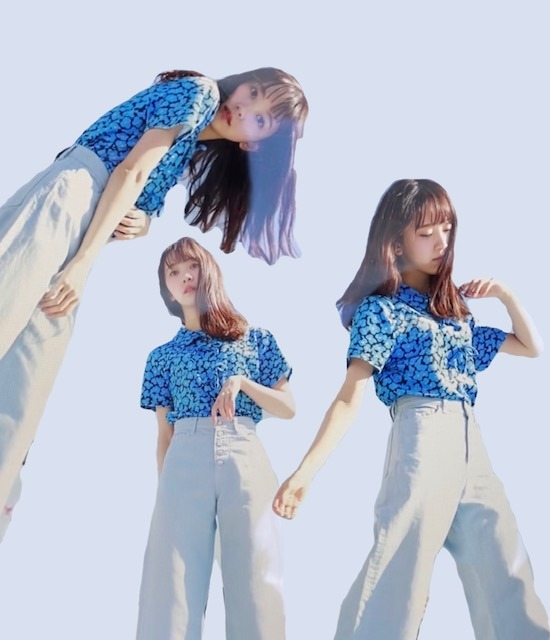
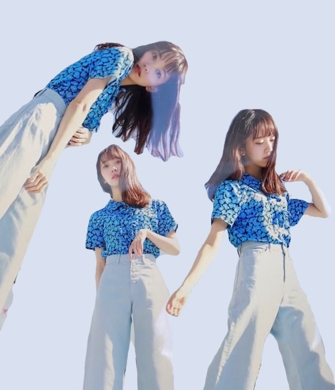

2020/0410Friひだりうで。
こんばんは!
コラージュに最近ハマってまして
12日発売のarのオフショットで
作ってみました❤︎



わーい！
最近だと
ロミオとジュリエットの
ロミオがパーティでジュリエットの手にキスしてる画像が好きでそれをコラージュしたり
私の好きな
" Elle Fanning "
" Audrey Hepburn "
" Taylor swift "
" Anne Hathaway "
の画像をコラージュしたりしてます．
ar、ぜひおうち時間のお供として
見てください☾
そしてレギュラーモデルになる前から
やらせていただいていたarの
"おもてなし達人への道" 連載が終了いたしました!
たくさんいろんな経験をさせていただけて
陶芸 和紙作り 和菓子作り そば打ち
飴細工 お茶の入れ方 魚の捌き方
美味しい白米の炊き方 美しいペン文字
お花を生ける 着物の着付け方 俳句
水彩画 裁縫などなど...
大人素敵女子になるべくいろんなことを
させていただけて気づけば23歳...
連載で学んだことが役立つ日々ですし
これからも身になることを続けていきたいです❁
終わってしまうのは寂しいけど
次号でお知らせがあるので、
お楽しみに~!


大好きなクレヨンしんちゃんを今朝見ていて
あ、私、しんちゃんの性格好きだなと．
面白くて行動が読めないけど
家族や友達思いで優しくて
いざというとき男気があって
素直で可愛さもあって
理想が詰まってました! 笑
野原一家って愛に溢れてますよね✦
素敵✦
北海道の話と宅配寿司の話と
大阪で食い倒れる話と猿が逃げてくる話が好きです
ちなみにロミオとジュリエットで
好きな台詞は
That which we call a rose by any other word would smell as sweet.
です
意味は
バラが別の名前でもその香りには変わらない
素敵!
また更新しますね
ではは
2020/0408Wedここ最近は
こんにチワワ
ここ最近はずっとゲームしてます
switchでいろんなゲームしてます
たのしい
バイオハザードうまい人の実況見たり。
バイオハザードうまい人ってかっこいい。憧れます。
私もクリア目指して頑張るぞー
あとは本を読んだり
映画を見たり
メイク勉強したり
インテリアをネットで見たり

ぽかん。
あ、あとは
オードリーヘップバーンについての本を
読み漁っています。
素敵だー
ちなみに
堀家にはチワワのニコルくんと

チワックスのプティくん

がいて毎日賑やかです☺︎
甘えん坊さんでおてんばでかわいい☺︎
みなさんは動物好きですか？
私はいつかお猿さんも飼ってみたいです
写真が無いので季節外れですがサンタさん。

みなさんのリクエストにお応えしながら
いろんなヘアメイクやっていきますね〜！
今日はどんなのにしようかなぁ
動画は@horimiona_2nd
にて
また更新します☺︎

じゃね
2020/0407Tueパジャマだいじ
いつか自分のお家にスクリーンで
だいすきな映画を観る用の
シアタールームを作るのが夢です...
ロングが既に懐かしいー！
いつか前髪なしロングにもしたいけど
いまはボブが気に入ってます。
お家でテーマ決めてヘアメイクして遊ぼうかなあって
考えてます！
どんなのがみたいですか？
お聞かせください☺︎
デハハ
いつか自分のお家にスクリーンで
だいすきな映画を観る用の
シアタールームを作るのが夢です...
ロングが既に懐かしいー！
いつか前髪なしロングにもしたいけど
いまはボブが気に入ってます。
お家でテーマ決めてヘアメイクして遊ぼうかなあって
考えてます！
どんなのがみたいですか？
お聞かせください☺︎
デハハ
2020/0405Sunおうちじかん
こんばんわに


お家での過ごし方
みなさんはどんな感じでしょうか？
私は本を読んだり
家族で美味しいご飯を食べたり
睡眠と食事はもちろん大切にしつつ
気になってた映画を観たり
switchでバイオハザード5と6をはじめたりして
お家時間を過ごしています☺︎
早くいつも通りの日々がきますように


今宵は
あつ森してから
マリーアントワネットを観て寝るのだ
あ、乃木坂工事中も観てね
おやすみ〜
2020/0404Satばっさり
Mステでサプライズお披露目しましたが、
髪切りました
ずっと伸ばしててやっとロングになったのですが
思い切って久しぶりに短く☺︎
ロング派の人、すみません
ちょくちょくInstagramとかブログにロング写真も
載せますね
今回は
切りっぱなしボブ でちょっと重めな感じです!

サプライズ成功かな？
サプライズ成功かな？
Mステで初お披露目にしてびっくりさせたくて...
どうですか...？
見つけてもらえたかなぁ
どうですか...？
見つけてもらえたかなぁ
仕事場に行ったらみんな気づいてくれて
ひなちまがかわいいって言いにきてくれて
いくちゃんもまいちゅんもれんかも
好きって言ってくれて
切り立ての毛先を白石さんといくちゃんと
切り立ての毛先を白石さんといくちゃんと
松村さんと高山さんに囲まれてふさふさ触られて
日奈子にもボブを持ち上げられて
毛先が喜んでました。笑
すぐに気づいて褒めてくれるメンバーが
日奈子にもボブを持ち上げられて
毛先が喜んでました。笑
すぐに気づいて褒めてくれるメンバーが
大好きだなぁと改めて☺︎
切りすぎたかなぁと思ってたからよかった。


そういえば乃木坂に入って
初めて髪をショートにした時も3月末とかだったなぁ
懐かしい
髪っていろんなものが詰まってるので
今は心も頭もさっぱりしてます
春ですね、
あ〜
5月27日にはよならんかな〜
写真集いい感じに仕上がってます!
早く見てほしいですᕦ(ò_óˇ)ᕤ✨
ちなみに表紙が決まりまして
通常版1種、限定盤3種の計4種類です!
まだお見せできないのですが
動画で私が説明してますので、是非。
さまざまな特典も先着であります!
御予約はこちらから☺︎
ふふふ

いま、ゴルゴンゾーラを聴いているのですが
ゴルゴンゾーラのレコーディングの時、
実は風邪をひいていて声がハスキーになっていまして
"変わりものばかりいつも惹かれてしまうのはなぜだろう"
"もっとアクが強い人と喧嘩をしながら"
改めて聞いてたら全然声違うやん！
ってなりました笑
話急に逸れたけど
よかったら注目してみて聞いてください✰
絢音がいつもゴルゴンゾーラを褒めてくれるの笑
かわいい歌だねって
私が特に好きな歌詞は
"趣味が悪かろうがなにを言われようが自分が良けりゃいいでしょ？"
"だれからも好かれてちゃ独り占めできない"
かなぁ
みなさんのゴルゴンゾーラ での
好きな歌詞はありますか？
変わり者が変わり者を好きになった感じが
かわいくて好きな世界観だし
普通じゃ物足りないじゃん!っていう邪道もいいし
チーズ好きだし
モッツァレラよりゴルゴンゾーラだし
好きが詰まった曲ですね
映画でいう、"アメリ"とか"勝手にふるえてろ"みたいな世界観です
また好きな歌の好きな歌詞紹介します!
好きな歌を好きな映画に例えるのもわかる人にはわかりそうでいいかも！
これ楽しい☺︎！
普段歌詞見ながら音楽聞く派なので
話したくて仕方ないんです。笑

ちなみに
最近観て面白かった映画は
ハッピーデスデイ
最低で最高のサリー
です☺︎
この2つの映画は全然違うジャンルだけど
これをみて感じたことは、
考えてから言葉を発さないといけないってことと
毎日を一生懸命に生きるって大事だなということ
取り消せないものの1つに"言葉"があるなぁと思っていて
何気ない一言で相手を傷つけてたりするし
自分の正直に何でも言う部分は大事にしたいけど
言葉を言う前に考える瞬間も本当に大切だなって。
だってその一言でいろんなことが変わってしまうんだから。ハッピーデスデイを見て痛感しました
無意識に人を傷つけることほど
怖いものはないですもんね...
人生やり直せたらって思っても
やり直しはもちろんきかないし
だからこそ自分に相手に、正直になって
毎日を生きるって大切だなぁと。
不器用だったら変に器用ぶらないで、
不器用らしくぶつかっていこ〜
ワハハ
急募
口内炎が治る方法
ではは